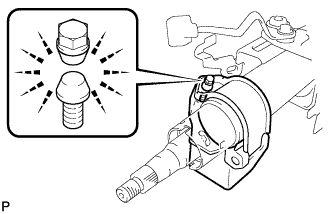

Steering Column Assembly Reassembly |
| 1. Install Steering Lock Actuator Assembly |
Secure the steering column assembly in a vise with aluminum plates.
 |
Install the steering lock actuator with a new steering lock set bolt, and tighten the bolt until the bolt head breaks off.
| 2. Install Steering Intermediate Shaft Assembly NO.2 |
 |
Align the matchmarks and connect steering intermediate shaft assembly No.2 to the steering column assembly.
 |
Install the bolt.